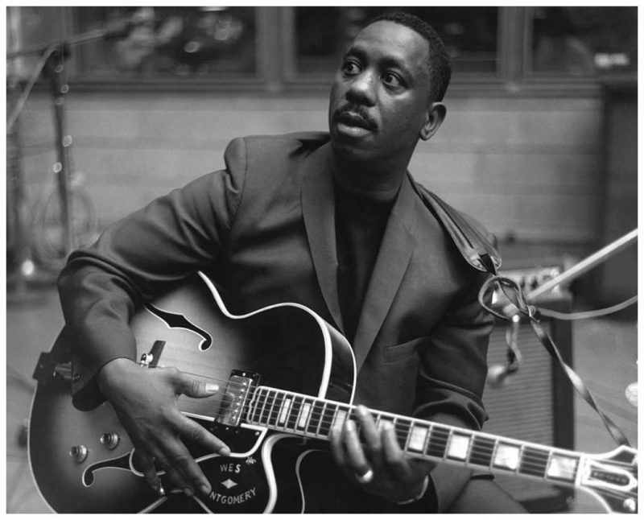

Bohater
SII, además considera que mantienen ...
mar
B.B King
Play slow... play with the Soul.
1990

J.S Bach
I hear God in every note...
1749
George Benson
practice, practice, practice!
John Mayer
Put God first in everything you do.
Franz Liszt
El sentimiento ingénito, sin adulteraciones, vive y destella en la música, sin transustanciación pictórica, sin ataduras de acción o pensamiento... Dios es omniamante y omnipotente
Miles Davis
I'm Kind of blue you know...
Wolfgang Amadeus Mozart
Regina caeli, laetare, alleluia. Quia quem meruisti portare, alleluia. Resurrexit, sicut dixit, alleluia. Ora pro nobis Deum, alleluia. Gaude et laetare Virgo María, alleluia. Quia surrexit Dominus vere, alleluia.

Vivaldi
Ave María, gratia plena, Dominus tecum, benedicta tu in muliéribus, et benedictus fructus ventris tui Iesus. Sancta Maria, Mater Dei, ora pro nobis peccatoribus, nunc et in ora mortis nostrae. Amen.

Wes Montgomery
Salve, Regina, mater misericordiae; vita dulcendo et spes nostra, salve. Ad te clamamus, exules, filii Evae. Ad te suspiramus, gementes et flentes in hac lacrimarum valle. Eia ergo advocata nostra, illos tuos misericordes oculos ad nos converte. Et Iesum, benedictus fructus ventris tui, nobis post hoc exsilium ostende. O clemens, O pía, o dulcis Virgo María.
mar
Jason Becker
22 MAY 2020 00:31
Abriste esta conversacion desde un anuncio. Si respondes, Jason Becker vera tu informacion publica y el anuncio en el que hiciste clic.
ME INTERESA